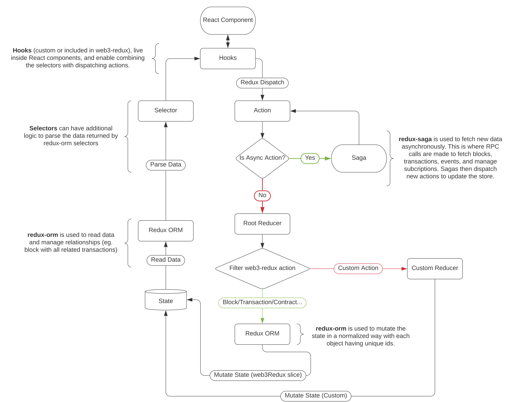

Web3 Redux Library.
Use your favorite node package manager to install web3-redux and the required peer dependencies. We recommend using pnpm as a disk space efficient drop-in replacement of npm.
pnpm install redux redux-saga react-redux web3 @leovigna/web3-redux
Overview of the overall architecture of the library.

web3Redux slice of the store as a normalized json store (State). The overall interface of the state can be found under State.useDispatch and useSelector, enable Redux components to use the React Context API to read/write to the store by combinding selectors and actions.Here is a list of all the interfaces used by web3-redux:
To easily read/sync data, we recommend using the built-in hooks when possible to automatically combine selectors & action dispatchers.
TODO: Add additional hooks. (transaction, contract)
Before you begin, you might want to get familiar with some of the libraries this "meta-library" is built with:
In most situations, you will want to add web3-redux to your existing redux store. The web3Reducer MUST be stored at the web3Redux key in your store.
//store.ts
import { combineReducers, createStore, applyMiddleware } from 'redux';
import createSagaMiddleware from 'redux-saga';
import { web3Reducer, web3Saga } from '@leovigna/web3-redux';
const reducers = combineReducers({
web3Redux: web3Reducer,
});
const sagaMiddleware = createSagaMiddleware();
const store = createStore(reducers, applyMiddleware(sagaMiddleware));
sagaMiddleware.run(web3Saga);
export default store;
Then follow the standard react-redux configuration guide to add a Provider component to wrap your entire React app in the redux context.
//index.tsx
import React from 'react';
import ReactDOM from 'react-dom';
import { Provider } from 'react-redux';
import App from './App';
import store from './store';
ReactDOM.render(
<React.StrictMode>
<Provider store={store}>
<App />
</Provider>
</React.StrictMode>,
);
All entities in the web3-redux store are indexed by networkId. web3-redux let's you sync multiple networks concurrently (eg. sync Mainnet & Ropsten blocks). To enable this however, you must first configure a network by adding it to the store and passing it a web3 instance.
A good place to do this in your React app is on app mount with a useEffect hook. Note that the component must be have access to the Redux context (see earlier section). Below a simple example for adding a network to the store on app mount. Here we assume the ethereum RPC is simply defined as an environment variable. For more dynamic configuration such as integration with Metamask, check out TBD.
//App.tsx
import { useEffect } from 'react';
import { useDispatch } from 'react-redux';
import Web3 from 'web3';
import { Network } from '@leovigna/web3-redux';
const App = () => {
const dispatch = useDispatch();
useEffect(() => {
const networkId = '1';
const web3 = new Web3(process.env.REACT_APP_RPC);
dispatch(Network.create({ networkId, web3 })); //create network
}, []); //Runs once on app mount
//...
};
One you've added a network, add a contract by dispatching a Contract.create action.
Bloew we've extended the previous example to add a contract.
//App.tsx
import { useEffect } from 'react';
import { useDispatch } from 'react-redux';
import Web3 from 'web3';
import { Network } from '@leovigna/web3-redux';
const App = () => {
const dispatch = useDispatch();
useEffect(() => {
const networkId = '1';
const web3 = new Web3(process.env.REACT_APP_RPC);
dispatch(Network.create({ networkId, web3 })); //create network
const address = process.env.REACT_APP_ABI;
const abi = dispatch(Contract.create({ networkId, address, abi })); //Some smart contract abi //create contract
}, []); //Runs once on app mount
//...
};
Alternatively, if not using hooks or React in general, you can manually dispatch a eth call action and use the selector as follows:
//Create contract
store.dispatch(Contract.create({ networkId, address, abi }));
The easiest way make a contract method call is using the useContractCall hook. This combines dispatching a redux action and using a selector to return the updating result.
Here we use once as the sync parameter to instruct the hook to dispatch a single eth call. For more info on complex sync strategies, see the sync documentation TBD
import { Contract } from '@leovigna/web3-redux';
const ERC20Component = ({ networkId, address, account }) => {
//Make contract call
const [balanceOf] = Contract.useContractCall(networkId, address, 'balanceOf', [account], { sync: 'once' });
//...
};
Alternative in plain Typescript:
//Make contract call
store.dispatch(Contract.call({
networkId,
address,
method: 'balanceOf',
args: [account],
}));
const balance = Contract.selectContractCall(state, {networkId, address }, 'balanceOf', { args: [account] } ]})
Another way to sync data from your smart contract is to use event subscriptions. The useEvents hook is helpful for this.
Here we enable sync and past to both get new updates (using websocket subscription) and past events (using getPastEvents). Note that getting past events can be an expensive operation, and we recommend disabling or limiting (with block range parameters) the fetching of old events when possible.
The web-redux event subscription hook is configured to automatically start/stop the correct subscription if any relevant params of the hook change. Alternatively, you can use the subscribe()/unsubscribe() handlers for more granular control such as handling user interactions.
import { Contract } from '@leovigna/web3-redux';
const ERC20Component = ({ networkId, address, account }) => {
// Sync events
const [transfers, { subscribe, unsubsribe }] = Contract.useEvents(networkId, address, 'Transfer', [account], {
sync: true,
past: true,
fromBlock: 'earliest',
toBlock: 'latest',
});
//...
};
To sync with on-chain events, it's a good idea to start a block subscription as it can be used as a reference point to keep data fresh. This is recommended but not required as some apps might use a different refresh mechanism.
The web3-redux block subscription hook is configured to automatically start/stop the correct subscription if the networkId parameter changes. Alternatively, you can use the subscribe()/unsubscribe() handlers for more granular control such as handling user interactions.
//Blocks.tsx
import { Block } from '@leovigna/web3-redux';
const BlocksComponent = ({ networkId }) => {
const [blocks, { subscribe, unsubsribe }] = Block.useBlockSync(networkId);
};
Alternatively, if not using hooks or React in general, you can manually dispatch a block sync action and use the selector as follows:
import { Block, Network } from '@leovigna/web3-redux';
store.dispatch(Block.subscribe({ networkId: '1' }));
const blocks = Network.selectBlocks(store.getState());
web3-redux offers enhanced customizability of contract call syncing to avoid unecessary rpc calls. Contract call syncing is achieved by refreshing contract calls based on a set of parameters. To initiate contract call syncing, one must first dispatch a ContractCallAction.
There are 4 types of contract call syncing:
once: Call contract method onceBlock: Call contract and refresh every block.
Evnet: (TDB)Transaction: Call contract and refresh every time a block includes a transaction to the contract.Note: Both block sync and transaction sync require an existing block subscription to be first created.
By default we use Transaction syncing. See Advanced/Optimising Contract Call Sync for more info.
web3-redux comes with a built-in Sync data model which serves as a form of dynamic middleware that can be added, removed, and customized. There are three types of syncs, BlockSync, EventSync, and TransactionSync which each can trigger actions upon receiving updates to a new block, new event, or new transaction.
All three inherit from BaseSync which defines a set of actions to dispatch if the filter predicate matches the update. Sync middleware can be useful when looking to dispatch your own custom Redux action as a result of some blockchain update. They are also used as the building blocks for the Contract Call sync.
Block Sync
This middleware listens for Block/CREATE actions, and if a block matches its filter predicate, will dispatch its actions. The following example triggers every 5 blocks:
store.dispatch(Sync.create({ id: '1', type: 'Block', filter: (block) => block.number % 5 == 0, actions }));
Event Sync
This middleware listens for ContractEvent/CREATE actions, and if an event matches its filter predicate, will dispatch its actions. The following example filters for events named Transfer:
store.dispatch(Sync.create({ id: '1', type: 'Event', filter: (event) => event.name == 'Transfer', actions }));
Transaction Sync
This middleware listens for Transaction/CREATE actions, and if an event matches its filter predicate, will dispatch its actions. The following example filters for tranaction from a particular sender:
store.dispatch(Sync.create({ id: '1', type: 'Transaction', filter: (tx) => tx.from == address, actions }));
See Manual Network Initialization for more detail. Metamask can cause issues as the injected Web3 instance is mutable and changes as users change networks. To mitigate this, Networks can be initialized with 2 web3 instances, one for read-only calls (eg. Infura) and one for wallet signed send transactions (Metamask). This way, subcriptions and call syncs can continue to work even if a user changes networks.
Override the optional web3Sender parameter when initializing the Network and set it to the injected Web3 instance. The regular read-only web3 instance should
const web3Sender = window.web3; //Metamask wallet, used for send transactions
const web3ReadOnly = new Web3('ws://localhost:8545'); //Used for calls/subscriptions
store.dispatch(Network.create({ networkId: '1', web3: web3ReadOnly, web3Sender }));
By default, contracts use Transaction syncing but this can be customized for each specific contract call. This is can be a sub-optimal or even incorrect sync strategy.
Transaction syncing can be sub-optimal if a call's return value never changes. For example, an ERC19 token's name or symbol. In this case simply disable syncing with sync: false.
Transaction syncing assumes that the contract call values are only dependent on your contract's state and that this state is only changed by direct transactions to your contract. The basic logic for Transaction syncing is as follows: For each transaction in a new block, update contract call if tx.to == contract.address.
Examples of cases where this assumption might be incorrect include:
In these cases we recommend switching to Block syncing, which will poll the contract call at every block. For even better optimization, it might be interesting in some cases to use a custom block or transaction sync.
The interface of ContractCallBlockSync and ContractCallTransactionSync use a filter function returning whether a contract call should update. Customizing the filter function can help you create more optimized syncing depending on your use case.
export interface ContractCallBlockSync {
type: typeof CALL_BLOCK_SYNC;
filter: (block: BlockHeader) => boolean;
}
export interface ContractCallTransactionSync {
type: typeof CALL_TRANSACTION_SYNC;
filter: (transaction: Transaction) => boolean;
}
Example sync strategies:
(block) => block.number % 5 == 0(tx) => tx.to === contract.address || tx.to === proxy.addressGenerated using TypeDoc